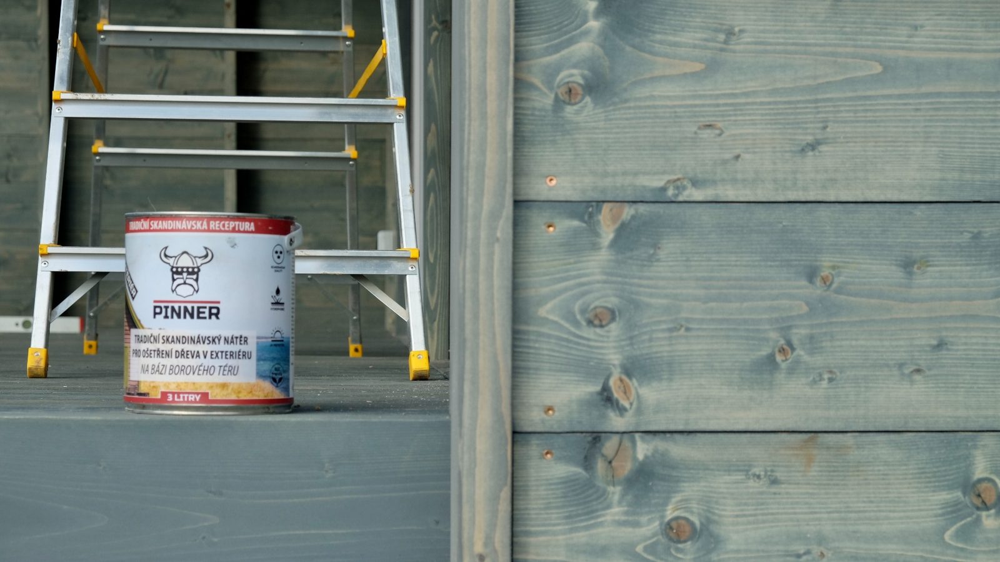

7 odstínů.
Jeden dehet.
Vyberte odstín na skutečném smrkovém prkně. Každý z nich má uvnitř borový dehet, který lazura nemá.
Balení 0,1 · 1 · 3 · 4 · 10 l · Interiér: Natur, Kouřová šeď, Ebony
Sada vzorků 7 × 0,1 l · 540 Kč
02 · TECHNICKÁ DATA
Co je uvnitř a co to dělá
| Složení | borový dehet, tungový olej, lněná fermež, světlicový olej, terpentýn, pigmenty |
|---|---|
| Vydatnost | [m²/l] · doplnit z Příručky |
| Počet vrstev | [2] · doplnit z Příručky |
| Schnutí | [h] · podle počasí |
| Ředění | terpentýn |
| Nářadí | štětec 63 / 90 mm, aplikační houba |
DEHET VS. OLEJ

| Látka | Úloha | OLEJ | DEHET |
|---|---|---|---|
| Fenoly | proti houbám a plísním | – | ano |
| Pryskyřičné kyseliny | hydrofobní impregnace | ano | ano |
| Terpeny | proti hmyzu | – | ano |
| Aromáty | pohlcují UV | – | ano |
| Uhlíkové řetězce | nevymývají se | – | ano |
Na co se hodí
03 · POUŽITÍ
Terasyexotické i domácí dřeviny

Ploty a pergolykonstrukce, dětská hřiště

Fasádysmrk, modřín, borovice

Nábytekstoly, lavice, křesla
Nátěr je doplněk. Střecha, přesah a odvětrání udělají 80 % práce – čtěte Konstrukční ochrana dřeva.
PŮVOD · ŠVÉDSKO, 1615
Receptura, kterou Vikingové použili na lodě
Dehet pálený z borovice v milíři chránil dlouhé lodě od 7. století a švédský export v 18. století dosahoval desítek tisíc sudů ročně. Stejnou recepturu dnes míchá Rexwood v Ústí nad Labem.
Celý příběh dehtu